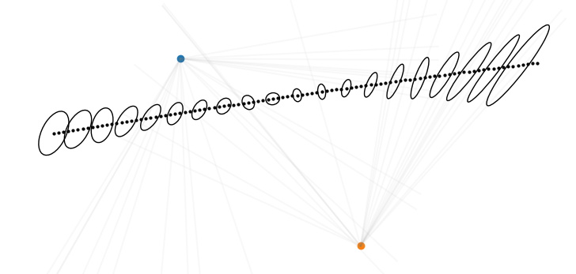

🐝 BLE Bee Tracking System Documentation
The BLE Bee Tracking System is a solution for landscape scale tracking of flying central place foragers. The tracked subject is tagged with a powered reciever, and across the landscape rotating high gain BLE transmitters are deployed to transmit data to the reciever tag. The tag is retrived from the subject and the data recieved is read from the tag. To keep the tag's profile and weight as low as possible, very little data is recieved by the tag. This necessitates probabilistic modelling of the reciever's movement to reconstruct its path across the landscape.